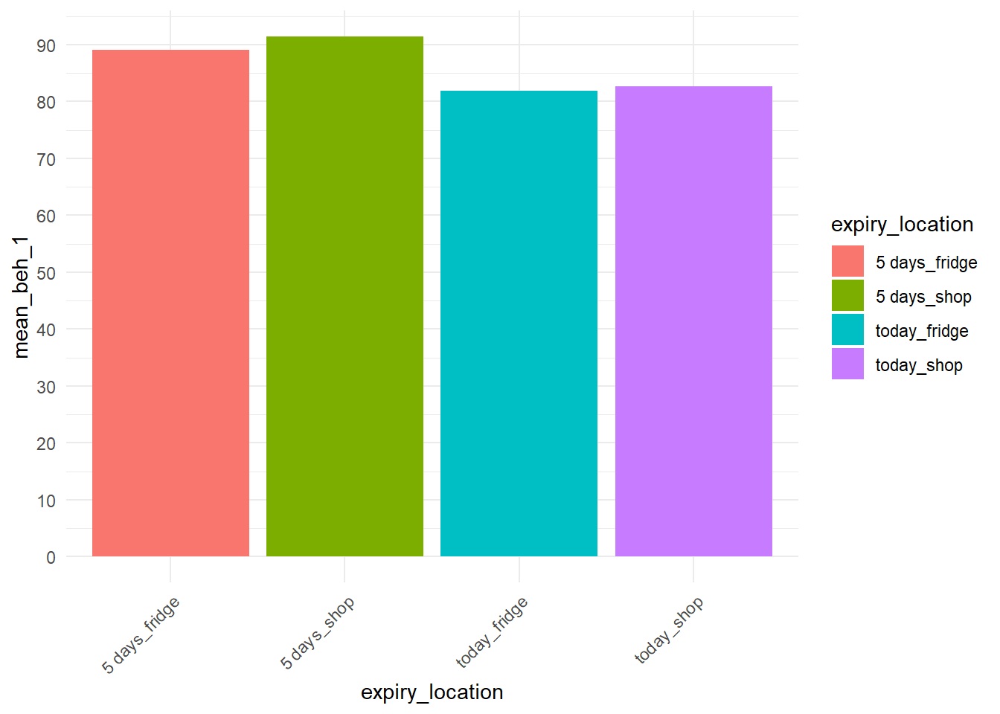
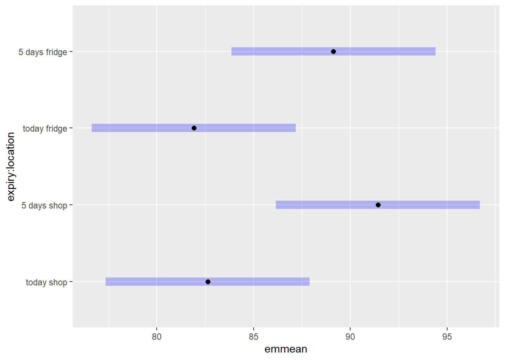

flowchart LR A[Storage location / expiration] -- H5/H6 --> B[Perceived Freshness] A -- H3/H4 --> C[Food safety risk perception] B --> E A -- H1/H2 --> E[Freezing likelihood] C --> E
pilot_results
1 Experiment 2 analysis
2x2 between subjects design to test the effect of storage location and expiration date on freezing behaviour. Testing whether this is mediated by safety concern.
- H1: People are more likely to freeze beef straight from the store than from the fridge, regardless of expiration date
- H2: People are more likely to freeze beef far from expiration date than close to expiration date, regardless of location
Perceived safety
- H3: The relationship of location on freezing likelihood is mediated by perceived safety
- H4: The relationship of expiration date on freezing likelihood is mediated by perceived safety
Perceived freshness
- H5: The relationship of location on freezing likelihood is mediated by perceived freshness
- H6: The relationship of expiration date on freezing likelihood is mediated by perceived freshness
1.1 data quality checks
1 respondent failed an attention check. 0 respondents removed for poor data quality.
1.2 sample
Code
df <- df %>%
mutate(
age = as.numeric(age),
adu = as.numeric(adu),
chi = as.numeric(chi),
inc = factor(inc, levels = c(1:10), labels = c("Less than $10,000", "$10,000 - $29,999", "$30,000 - $49,999", "$50,000 - $69,999", "$70,000 - $89,999", "$90,000 - $99,999", "$100,000 - $124,999", "$125,000 - $149,999", "$150,000 - $199,999", "$200,000 or more")),
edu = factor(edu, levels = c(1:9), labels = c("No formal education", "Less than a high school diploma", "High school graduate or equivalent (i.e. GED)", "Some college, but no degree", "Associate degree (i.e. AA, AS)", "Bachelor's degree (i.e. BA, AB, BS)", "Master's degree (i.e. MA, MS, MEng, etc.)", "Professional degree (i.e. MD, DDS, DVM, LLB, JD)", "Doctorate degree (i.e. PhD, EdD)")),
gender = factor(gender, levels = c(1:4), labels = c("male", "female", "non-binary", "prefer not to say"))
)
table1(~ gender + age + adu + chi + edu + inc, data = df)| Overall (N=301) |
|
|---|---|
| gender | |
| male | 158 (52.5%) |
| female | 136 (45.2%) |
| non-binary | 6 (2.0%) |
| prefer not to say | 1 (0.3%) |
| age | |
| Mean (SD) | 37.1 (11.1) |
| Median [Min, Max] | 35.0 [19.0, 81.0] |
| adu | |
| Mean (SD) | 2.21 (1.04) |
| Median [Min, Max] | 2.00 [0, 8.00] |
| chi | |
| Mean (SD) | 0.460 (0.863) |
| Median [Min, Max] | 0 [0, 4.00] |
| Missing | 1 (0.3%) |
| edu | |
| No formal education | 1 (0.3%) |
| Less than a high school diploma | 2 (0.7%) |
| High school graduate or equivalent (i.e. GED) | 36 (12.0%) |
| Some college, but no degree | 67 (22.3%) |
| Associate degree (i.e. AA, AS) | 33 (11.0%) |
| Bachelor's degree (i.e. BA, AB, BS) | 108 (35.9%) |
| Master's degree (i.e. MA, MS, MEng, etc.) | 40 (13.3%) |
| Professional degree (i.e. MD, DDS, DVM, LLB, JD) | 2 (0.7%) |
| Doctorate degree (i.e. PhD, EdD) | 12 (4.0%) |
| inc | |
| Less than $10,000 | 12 (4.0%) |
| $10,000 - $29,999 | 41 (13.6%) |
| $30,000 - $49,999 | 58 (19.3%) |
| $50,000 - $69,999 | 39 (13.0%) |
| $70,000 - $89,999 | 37 (12.3%) |
| $90,000 - $99,999 | 21 (7.0%) |
| $100,000 - $124,999 | 32 (10.6%) |
| $125,000 - $149,999 | 26 (8.6%) |
| $150,000 - $199,999 | 17 (5.6%) |
| $200,000 or more | 18 (6.0%) |
1.3 Descriptives
Correlations for the likelihood items are shown in Table 1. Correlations should be low, as the answers are mutually exclusive.
| Freezing | Discarding | Cooking | Fridge | Share | |
|---|---|---|---|---|---|
| lik_1 | 1.00 | -0.44 | -0.12 | 0.00 | -0.19 |
| lik_2 | -0.44 | 1.00 | -0.05 | -0.04 | 0.29 |
| lik_3 | -0.12 | -0.05 | 1.00 | 0.21 | 0.20 |
| lik_4 | 0.00 | -0.04 | 0.21 | 1.00 | 0.01 |
| lik_5 | -0.19 | 0.29 | 0.20 | 0.01 | 1.00 |
In Figure 1, the means and SDs of the behaviour likelihood items are shown. The likelihood of freezing ground beef is overall very high in all conditions (ranging from 5.43 to 6.48)
Code
long_lik <- df %>%
pivot_longer(
cols = starts_with("lik_"),
names_to = "lik_item",
values_to = "score"
)
lik_summary <- long_lik %>%
group_by(expiry, location, lik_item) %>%
summarise(
n = sum(!is.na(score)),
mean = mean(score, na.rm = TRUE),
sd = sd(score, na.rm = TRUE),
.groups = "drop"
)
ggplot(lik_summary, aes(x = expiry, y = mean, fill = location)) +
geom_col(position = position_dodge(width = 0.9), width = 0.8) +
facet_wrap(~ lik_item, ncol = 3, labeller = as_labeller(facet_labels))+
geom_errorbar(
aes(ymin = mean-sd, ymax = mean+sd),
position = position_dodge(width = 0.9),
width = 0.2,
linewidth = 0.6
)
# ggsave(paste0(wd$output, "beh_int_summary.png"), width = 10, height = 7)
Click to see details
Code
lik_summary %>%
arrange(lik_item, expiry, location) %>%
kable(digits = 2, caption = "Means and SDs for Each Condition") %>%
kable_styling(full_width = FALSE, bootstrap_options = c("striped", "hover"))| expiry | location | lik_item | n | mean | sd |
|---|---|---|---|---|---|
| today | shop | lik_1 | 75 | 5.80 | 1.87 |
| today | fridge | lik_1 | 76 | 5.43 | 1.91 |
| 3_days | shop | lik_1 | 75 | 6.33 | 1.39 |
| 3_days | fridge | lik_1 | 75 | 6.48 | 1.14 |
| today | shop | lik_2 | 75 | 1.87 | 1.62 |
| today | fridge | lik_2 | 76 | 2.51 | 1.68 |
| 3_days | shop | lik_2 | 75 | 1.60 | 1.36 |
| 3_days | fridge | lik_2 | 75 | 1.81 | 1.51 |
| today | shop | lik_3 | 75 | 4.64 | 2.08 |
| today | fridge | lik_3 | 76 | 4.93 | 1.96 |
| 3_days | shop | lik_3 | 75 | 4.65 | 1.83 |
| 3_days | fridge | lik_3 | 75 | 4.23 | 2.12 |
| today | shop | lik_4 | 75 | 2.97 | 1.98 |
| today | fridge | lik_4 | 76 | 3.04 | 1.99 |
| 3_days | shop | lik_4 | 75 | 3.45 | 1.97 |
| 3_days | fridge | lik_4 | 75 | 2.95 | 1.99 |
| today | shop | lik_5 | 75 | 2.51 | 1.92 |
| today | fridge | lik_5 | 76 | 3.26 | 1.93 |
| 3_days | shop | lik_5 | 75 | 2.89 | 1.98 |
| 3_days | fridge | lik_5 | 75 | 2.88 | 2.06 |
1.4 Manipulation check
There was a manipulation check for both the expiration date and storage location. Expiration date: Manipulation successful As shown in Table 2, meat expiring today is rated higher on the statement “The ground beef is close to expiry” than beef expiring in 3 days. The mean difference is only small. They also find the beef expiring in 3 days to be expiring soon.
Location: Manipulation successful As shown in Table 4, people mostly correctly indicate when the beef was purchased.
Code
t.test(man_expiry ~ expiry, data = df) |>
tidy() |>
select(estimate1, estimate2, estimate, statistic, p.value, parameter, conf.low, conf.high) |>
kable(
col.names = c(
"Mean (Today)", "Mean (3 Days)", "Mean Diff",
"t", "p", "df", "CI Lower", "CI Upper"
)
)| Mean (Today) | Mean (3 Days) | Mean Diff | t | p | df | CI Lower | CI Upper |
|---|---|---|---|---|---|---|---|
| 4.569536 | 4.153333 | 0.4162031 | 4.148413 | 4.37e-05 | 298.9905 | 0.2187641 | 0.6136421 |
Code
df$man_purchase <- factor(df$man_purchase, levels = c(1,2), labels = c("Bought today", "Not bought today"))
kable(table(df$man_purchase, df$location), row.names = T) %>% kable_styling(full_width = F)| shop | fridge | |
|---|---|---|
| Bought today | 111 | 7 |
| Not bought today | 39 | 144 |
Code
chisq.test(table(df$man_purchase, df$location)) %>%
tidy() %>%
select(!method) %>%
mutate(p.value = ifelse(p.value < 0.001, "< .001", formatC(p.value, digits = 3, format = "f"))) %>%
kable(col.names = c("χ²", "p", "df"), digits = 3, align = "c") %>% kable_styling(full_width = F)| χ² | p | df |
|---|---|---|
| 149.009 | < .001 | 1 |
2 Analysis freezing likelihood
see Table 5 for the main ANOVA of the factors expiry and location, predicting the likelihood of freezing the ground beef.
Effects are not as expected. Only the main effect for expiry is significant, storage location does not seem to play a role.
Code
# Freezing likelihood
options(contrasts = c("contr.sum", "contr.poly"))
aov <- aov(lik_1 ~ location*expiry, data = df)
kable(Anova(aov, type = 3),
col.names = c("", "SS", "df", "F", "p"),
digits = 3,
align = "c")| SS | df | F | p | |
|---|---|---|---|---|
| (Intercept) | 10878.617 | 1 | 4184.854 | 0.000 |
| location | 0.903 | 1 | 0.347 | 0.556 |
| expiry | 46.910 | 1 | 18.046 | 0.000 |
| location:expiry | 4.940 | 1 | 1.900 | 0.169 |
| Residuals | 772.058 | 297 | NA | NA |
Assumption check and robust test
Code
# check assumptions
qqnorm(residuals(aov));qqline(residuals(aov)) #non-normalCode
leveneTest(aov) %>% #homoscedascicity violated
tidy() %>%
mutate(p.value = ifelse(p.value < 0.001, "< .001", formatC(p.value, digits = 3, format = "f"))) %>%
kable(digits = 3,
caption = "Levene's test",
col.names = c("F", "p", "df", "df res"),
align = "c") %>%
kable_styling(full_width = F)| F | p | df | df res |
|---|---|---|---|
| 6.555 | < .001 | 3 | 297 |
QQ plot of ANOVA residuals
Code
# robust regression, trimmed means (20%)
t2way(lik_1 ~ location*expiry, data = df)Call:
t2way(formula = lik_1 ~ location * expiry, data = df)
value p.value
location 2.2271 0.139
expiry 13.1193 0.001
location:expiry 2.6710 0.105While only expiry is significant, I still had a look at the pairwise comparisons to see if there’s any interesting effects.
Table 6 shows post-hoc pairwise comparisons and EMMeans are shown in Figure 2. This also does not show any potentially promising effects of storage location.
Code
# post-hoc
emm <- emmeans(aov, ~ location * expiry)
kable(pairs(emm, adjust = "bonferroni"), digits = 3) %>% kable_styling(full_width = F)| contrast | estimate | SE | df | t.ratio | p.value |
|---|---|---|---|---|---|
| shop today - fridge today | 0.366 | 0.262 | 297 | 1.394 | 0.986 |
| shop today - shop 3_days | -0.533 | 0.263 | 297 | -2.026 | 0.262 |
| shop today - fridge 3_days | -0.680 | 0.263 | 297 | -2.583 | 0.062 |
| fridge today - shop 3_days | -0.899 | 0.262 | 297 | -3.426 | 0.004 |
| fridge today - fridge 3_days | -1.046 | 0.262 | 297 | -3.985 | 0.001 |
| shop 3_days - fridge 3_days | -0.147 | 0.263 | 297 | -0.557 | 1.000 |
Code
ggplot(as.data.frame(emm), aes(x = expiry, y = emmean, group = location, color = location)) +
geom_line(linewidth = 1) +
geom_point(size = 3) +
geom_errorbar(
aes(ymin = emmean - SE, ymax = emmean + SE),
width = 0.15
) +
ylim(5,7)3 discarding likelihood
We also measured other behaviour likelihoods: likelihood of discarding, cooking, leaving it in the fridge and giving it to someone else.
Table 7 shows the ANOVA table predicting the likelihood to throw away the ground beef. There is a significant main effect for location and expiry. People are more likely to discard meat from the fridge than from the shop, regardless of expiry date.
Code
# Discarding likelihood
aov_dis <- aov(lik_2 ~ location*expiry, data = df)
kable(Anova(aov_dis, type = 3),
col.names = c("", "SS", "df", "F", "p"),
digits = 3,
align = "c")| SS | df | F | p | |
|---|---|---|---|---|
| (Intercept) | 1142.508 | 1 | 477.223 | 0.000 |
| location | 13.908 | 1 | 5.809 | 0.017 |
| expiry | 17.572 | 1 | 7.340 | 0.007 |
| location:expiry | 3.530 | 1 | 1.474 | 0.226 |
| Residuals | 711.040 | 297 | NA | NA |
Assumption check and robust test
Code
# check assumptions
qqnorm(residuals(aov_dis));qqline(residuals(aov_dis)) #non-normalCode
leveneTest(aov_dis) %>% #homoscedascicity violated
tidy() %>%
mutate(p.value = ifelse(p.value < 0.001, "< .001", formatC(p.value, digits = 3, format = "f"))) %>%
kable(digits = 3,
caption = "Levene's test",
col.names = c("F", "p", "df", "df res"),
align = "c") %>%
kable_styling(full_width = F)| F | p | df | df res |
|---|---|---|---|
| 3.242 | 0.022 | 3 | 297 |
QQ plot of ANOVA residuals
Code
# robust regression, trimmed means (20%)
t2way(lik_2 ~ location*expiry, data = df)Call:
t2way(formula = lik_2 ~ location * expiry, data = df)
value p.value
location 8.5312 0.005
expiry 13.2141 0.001
location:expiry 6.9438 0.010When inspecting the posthoc comparisons (Table 8) and the EMMeans (Figure 3), this shows that while on average the likelihood of throwing away is higher for meat stored in the fridge than from the store, this difference is only marginally significant for meat expiring today.
Code
# post-hoc
emm_throw <- emmeans(aov_dis, ~ location * expiry)
kable(pairs(emm_throw, adjust = "bonferroni") , digits = 3) %>% kable_styling(full_width = F)| contrast | estimate | SE | df | t.ratio | p.value |
|---|---|---|---|---|---|
| shop today - fridge today | -0.646 | 0.252 | 297 | -2.567 | 0.064 |
| shop today - shop 3_days | 0.267 | 0.253 | 297 | 1.055 | 1.000 |
| shop today - fridge 3_days | 0.053 | 0.253 | 297 | 0.211 | 1.000 |
| fridge today - shop 3_days | 0.913 | 0.252 | 297 | 3.626 | 0.002 |
| fridge today - fridge 3_days | 0.700 | 0.252 | 297 | 2.779 | 0.035 |
| shop 3_days - fridge 3_days | -0.213 | 0.253 | 297 | -0.844 | 1.000 |
Code
ggplot(as.data.frame(emm_throw), aes(x = expiry, y = emmean, group = location, color = location)) +
geom_line(linewidth = 1) +
geom_point(size = 3) +
geom_errorbar(
aes(ymin = emmean - SE, ymax = emmean + SE),
width = 0.15
) +
ylim(1,3)3.0.1 remove failed manipulation check
To check whether inattentiveness may have anything to do with the results, I removed the people who answered the question about when the meat was purchased incorrectly (removed 46).
Running the analysis on the remaining people (n = 255) does not change the results and still only expiry date remains significant, as shown in Table 9.
Code
sub_man <- df %>%
filter((location == "shop" & man_purchase == "Bought today") |
(location == "fridge" & man_purchase == "Not bought today"))
subaov <- aov(lik_1 ~ location*expiry, data = sub_man)
kable(Anova(subaov, type = 3),
col.names = c("", "SS", "df", "F", "p"),
digits = 3,
align = "c")| SS | df | F | p | |
|---|---|---|---|---|
| (Intercept) | 9180.339 | 1 | 3610.210 | 0.000 |
| location | 4.049 | 1 | 1.592 | 0.208 |
| expiry | 32.816 | 1 | 12.905 | 0.000 |
| location:expiry | 6.219 | 1 | 2.446 | 0.119 |
| Residuals | 638.263 | 251 | NA | NA |
4 Mediation
We are interested in the mediating effect of perceived food safety risk and perceived freshness.
Figure 4 and Figure 5 show the means of perceived food safety risk and perceived freshness in each condition.
4.0.1 Mediation for freezing likelihood
Code
# descriptives
ggplot(df, aes(x = location, y = per_risk, fill = expiry)) +
stat_summary(fun = mean, geom = "bar", position = position_dodge(width = 1)) +
stat_summary(fun.data = mean_se, geom = "errorbar",
position = position_dodge(width = 1), width = 0.2) +
labs(title = "Perceived Risk by Location and Expiry",
x = "Storage Location", y = "Perceived Risk") +
theme_minimal()
ggplot(df, aes(x = location, y = per_fresh, fill = expiry)) +
stat_summary(fun = mean, geom = "bar", position = position_dodge(width = 1)) +
stat_summary(fun.data = mean_se, geom = "errorbar",
position = position_dodge(width = 1), width = 0.2) +
labs(title = "Perceived Freshness by Location and Expiry",
x = "Storage Location", y = "Perceived Freshness") +
theme_minimal()The mediation analysis is shown in Table 14. This shows that the relationship of expiry on freezing likelihood is mediated by perceived food safety risk, as the Average Causal Mediation Effect (ACME) is significant.
Individual path tests
Perceived risk and perceived freshness are not affected by location, only expiration.
Table 10 shows that there is a significant main effect of expiry on perceived risk, but no other significant results.
Code
# path a
risk_path <- aov(per_risk ~ location*expiry, data = df)
kable(Anova(risk_path, type = "3"), digits = 3, col.names = c("SS", "df", "F", "p")) %>%
kable_styling(full_width = F)| SS | df | F | p | |
|---|---|---|---|---|
| (Intercept) | 3250.974 | 1 | 671.937 | 0.000 |
| location | 0.848 | 1 | 0.175 | 0.676 |
| expiry | 74.042 | 1 | 15.304 | 0.000 |
| location:expiry | 1.253 | 1 | 0.259 | 0.611 |
| Residuals | 1432.110 | 296 | NA | NA |
Table 11 shows also a significant main effect of expiry on perceived freshness.
Code
fresh_path <- aov(per_fresh ~ location*expiry, data = df)
kable(Anova(fresh_path, type = "3"), digits = 3, col.names = c("SS", "df", "F", "p")) %>%
kable_styling(full_width = F)| SS | df | F | p | |
|---|---|---|---|---|
| (Intercept) | 5887.734 | 1 | 2476.856 | 0.000 |
| location | 3.607 | 1 | 1.517 | 0.219 |
| expiry | 35.589 | 1 | 14.972 | 0.000 |
| location:expiry | 0.280 | 1 | 0.118 | 0.731 |
| Residuals | 705.999 | 297 | NA | NA |
Table 12 shows that perceived risk significantly predicts the likelihood to freeze, as does perceived freshness (as shown in Table 13).
Code
# path b
risk_freeze <- lm(lik_1 ~ per_risk, data = df)
risk_freeze %>%
tidy() %>%
mutate(p.value = ifelse(p.value < 0.001, "< .001", formatC(p.value, digits = 3, format = "f"))) %>%
kable(digits = 3, col.names = c("term", "b", "SE", "t", "p"), align = "c") %>%
kable_styling(full_width = F)| term | b | SE | t | p |
|---|---|---|---|---|
| (Intercept) | 6.845 | 0.16 | 42.678 | < .001 |
| per_risk | -0.252 | 0.04 | -6.272 | < .001 |
Code
fresh_freeze <- lm(lik_1 ~ per_fresh, data = df)
fresh_freeze %>%
tidy() %>%
mutate(p.value = ifelse(p.value < 0.001, "< .001", formatC(p.value, digits = 3, format = "f"))) %>%
kable(digits = 3, col.names = c("term", "b", "SE", "t", "p"), align = "c") %>%
kable_styling(full_width = F)| term | b | SE | t | p |
|---|---|---|---|---|
| (Intercept) | 4.683 | 0.274 | 17.110 | < .001 |
| per_fresh | 0.300 | 0.058 | 5.147 | < .001 |
Code
# mediation
med_risk <- lm(per_risk ~ location + expiry, data = df)
out_risk <- lm(lik_1 ~ location + expiry + per_risk, data = df)
med_risk_result <- mediation::mediate(med_risk, out_risk,
treat = "expiry", mediator = "per_risk",
boot = TRUE, sims = 1000)
tidy(med_risk_result)[-c(2, 4), ] %>%
mutate(term = case_when(
term == "acme_0" ~ "ACME",
term == "ade_0" ~ "ADE",
TRUE ~ term
),
p.value = ifelse(p.value < 0.001, "< .001", formatC(p.value, digits = 3, format = "f"))) %>%
kable(
digits = 3,
col.names = c("Term","Estimate", "SE","p-value")
) %>%
kable_styling(full_width = FALSE)| Term | Estimate | SE | p-value |
|---|---|---|---|
| ACME | 0.223 | 0.081 | < .001 |
| ADE | 0.577 | 0.170 | < .001 |
4.0.2 Mediation for discarding likelihood
As shown in Table 17, the relationship between location and discarding likelihood is not mediated by perceived risk. Only the Average Direct Effect (ADE) is significant (direct effect of location on discard likelihood).
Table 18 shows that the effect is also not mediated by perceived freshness.
Individual path tests
Table 15 shows that discarding likelihood is significantly predicted by the perceived risk.
Code
# path b
risk_disc <- lm(lik_2 ~ per_risk, data = df)
risk_disc %>%
tidy() %>%
mutate(p.value = ifelse(p.value < 0.001, "< .001", formatC(p.value, digits = 3, format = "f"))) %>%
kable(digits = 3, col.names = c("term", "b", "SE", "t", "p"), align = "c") %>%
kable_styling(full_width = F)| term | b | SE | t | p |
|---|---|---|---|---|
| (Intercept) | 0.631 | 0.133 | 4.736 | < .001 |
| per_risk | 0.401 | 0.033 | 11.999 | < .001 |
Table 15 shows that discarding likelihood is significantly predicted by the perceived freshness.
Code
fresh_disc <- lm(lik_2 ~ per_fresh, data = df)
fresh_disc %>%
tidy() %>%
mutate(p.value = ifelse(p.value < 0.001, "< .001", formatC(p.value, digits = 3, format = "f"))) %>%
kable(digits = 3, col.names = c("term", "b", "SE", "t", "p"), align = "c") %>%
kable_styling(full_width = F)| term | b | SE | t | p |
|---|---|---|---|---|
| (Intercept) | 3.455 | 0.255 | 13.528 | < .001 |
| per_fresh | -0.340 | 0.054 | -6.254 | < .001 |
Code
med_risk_disc <- lm(per_risk ~ location + expiry, data = df)
out_risk_disc <- lm(lik_2 ~ location + expiry + per_risk, data = df)
med_risk_disc_result <- mediation::mediate(med_risk_disc, out_risk_disc,
treat = "location", mediator = "per_risk",
boot = TRUE, sims = 1000)
tidy(med_risk_disc_result)[-c(2, 4), ] %>%
mutate(term = case_when(
term == "acme_0" ~ "ACME",
term == "ade_0" ~ "ADE",
TRUE ~ term
)) %>%
kable(
digits = 3,
col.names = c("Term","Estimate", "SE","p-value")
) %>%
kable_styling(full_width = FALSE)| Term | Estimate | SE | p-value |
|---|---|---|---|
| ACME | -0.043 | 0.107 | 0.636 |
| ADE | 0.470 | 0.145 | 0.002 |
Code
med_risk_disc_f <- lm(per_fresh ~ location + expiry, data = df)
out_risk_disc_f <- lm(lik_2 ~ location + expiry + per_fresh, data = df)
med_fresh_disc_result <- mediation::mediate(med_risk_disc_f, out_risk_disc_f,
treat = "location", mediator = "per_fresh",
boot = TRUE, sims = 1000)
tidy(med_fresh_disc_result)[-c(2, 4), ] %>%
mutate(term = case_when(
term == "acme_0" ~ "ACME",
term == "ade_0" ~ "ADE",
TRUE ~ term
)) %>%
kable(
digits = 3,
col.names = c("Term","Estimate", "SE","p-value")
) %>%
kable_styling(full_width = FALSE)| Term | Estimate | SE | p-value |
|---|---|---|---|
| ACME | -0.073 | 0.062 | 0.188 |
| ADE | 0.504 | 0.172 | 0.002 |
5 Clustering
Clustered the participants from the expiry = today condition (n = 150)
From PCA, the first dimension is one of freezing (lik_1) vs. discarding (lik_2), and then there’s everything else.
Using Hierarchical Clustering on Principal Components with 3 clusters, which is statistically the best solution.
- These people mainly focus on freezing, with a bit of cooking (n = 68)
- These people use more strategies: freezing, cooking and fridge. Though fridge isn’t very helpful (n = 53)
- These people do not freeze (as much). They are more likely to discard (n = 30)
Code
df_clust <- df %>%
filter(expiry == "today" ) %>%
select(lik_1:lik_5, edu, gender, inc, chi, adu, age, meat_freq, man_expiry)
subset_expiry <- df %>%
filter(expiry == "today")
pcadf <- FactoMineR::PCA(df_clust[, c("lik_1", "lik_2", "lik_3", "lik_4", "lik_5")])Code
hcpcdf <- HCPC(pcadf, nb.clust = 3, graph = F)
df_clust$cluster <- factor(hcpcdf$data.clust$clust)
subset_expiry$cluster <- factor(hcpcdf$data.clust$clust)
#df[expiry == "today",]$cluster <- hcpcdf$data.clust$clust
fviz_cluster(hcpcdf)Code
kable(aggregate(df_clust[, c("lik_1", "lik_2", "lik_3", "lik_4", "lik_5")],
by = list(cluster = df_clust$cluster), FUN = mean), caption = "Mean behaviour likelihood scores by cluster", col.names = c("Cluster", "Freezing", "Discarding", "Cooking", "Fridge", "Share"), digits = 2)| Cluster | Freezing | Discarding | Cooking | Fridge | Share |
|---|---|---|---|---|---|
| 1 | 6.47 | 1.40 | 4.69 | 1.68 | 2.57 |
| 2 | 5.77 | 1.87 | 5.25 | 5.36 | 2.81 |
| 3 | 3.40 | 4.57 | 4.20 | 1.87 | 3.73 |
Code
kable(table(df_clust$cluster), caption = "Cluster sizes", col.names = c("Cluster", "n"))| Cluster | n |
|---|---|
| 1 | 68 |
| 2 | 53 |
| 3 | 30 |
Code
aov_freezecluster <- aov(lik_1 ~ cluster, data = df_clust)
kable(tidy(aov_freezecluster), caption = "ANOVA of freezing likelihood predicted by cluster", digits = 2)| term | df | sumsq | meansq | statistic | p.value |
|---|---|---|---|---|---|
| cluster | 2 | 198.30 | 99.15 | 43.23 | 0 |
| Residuals | 148 | 339.42 | 2.29 | NA | NA |
Code
ph_freeze <- TukeyHSD(aov_freezecluster)
kable(tidy(ph_freeze), caption = "post hoc Tukey freezing likelihood", digits = 2)| term | contrast | null.value | estimate | conf.low | conf.high | adj.p.value |
|---|---|---|---|---|---|---|
| cluster | 2-1 | 0 | -0.70 | -1.35 | -0.04 | 0.03 |
| cluster | 3-1 | 0 | -3.07 | -3.86 | -2.28 | 0.00 |
| cluster | 3-2 | 0 | -2.37 | -3.19 | -1.55 | 0.00 |
Code
aov_discardcluster <- aov(lik_2 ~ cluster, data = df_clust)
kable(tidy(aov_discardcluster), caption = "ANOVA of discarding likelihood predicted by cluster", digits = 2)| term | df | sumsq | meansq | statistic | p.value |
|---|---|---|---|---|---|
| cluster | 2 | 217.71 | 108.85 | 79.08 | 0 |
| Residuals | 148 | 203.72 | 1.38 | NA | NA |
Code
ph_discard <- TukeyHSD(aov_discardcluster)
kable(tidy(ph_discard), caption = "post hoc Tukey discard likelihood", digits = 2)| term | contrast | null.value | estimate | conf.low | conf.high | adj.p.value |
|---|---|---|---|---|---|---|
| cluster | 2-1 | 0 | 0.47 | -0.04 | 0.98 | 0.08 |
| cluster | 3-1 | 0 | 3.17 | 2.56 | 3.78 | 0.00 |
| cluster | 3-2 | 0 | 2.70 | 2.06 | 3.33 | 0.00 |
Mainly cluster 3 freezes less and discards more than the other two clusters.
5.0.1 Defining clusters
5.0.1.1 Socio-demographics
I cannot figure out if cluster 3 is a specific targetable group. There are no significant demographics
Code
df_clust <- df_clust %>%
mutate(
gender = factor(gender),
inc = factor(inc),
edu = factor(edu)
)
kable(tidy(chisq.test(table(df_clust$cluster, df_clust$gender))), caption = "Gender")| statistic | p.value | parameter | method |
|---|---|---|---|
| 9.502432 | 0.1472305 | 6 | Pearson’s Chi-squared test |
Code
kable(tidy(aov(age ~ cluster, data = df_clust)), caption = "Age")| term | df | sumsq | meansq | statistic | p.value |
|---|---|---|---|---|---|
| cluster | 2 | 430.212 | 215.1060 | 2.105236 | 0.1254502 |
| Residuals | 148 | 15122.146 | 102.1767 | NA | NA |
Code
kable(tidy(chisq.test(table(df_clust$cluster, df_clust$inc))), caption = "Income")| statistic | p.value | parameter | method |
|---|---|---|---|
| 25.59987 | 0.109265 | 18 | Pearson’s Chi-squared test |
Code
kable(tidy(chisq.test(table(df_clust$cluster, df_clust$edu))), caption = "Education")| statistic | p.value | parameter | method |
|---|---|---|---|
| 15.43009 | 0.4933924 | 16 | Pearson’s Chi-squared test |
Code
kable(tidy(aov(chi ~ cluster, data = df_clust)), caption = "Number of children")| term | df | sumsq | meansq | statistic | p.value |
|---|---|---|---|---|---|
| cluster | 2 | 0.6461061 | 0.3230531 | 0.4464132 | 0.6407781 |
| Residuals | 148 | 107.1022383 | 0.7236638 | NA | NA |
Code
kable(tidy(aov(adu ~ cluster, data = df_clust)), caption = "Number of adults")| term | df | sumsq | meansq | statistic | p.value |
|---|---|---|---|---|---|
| cluster | 2 | 1.394961 | 0.6974804 | 0.6356617 | 0.5310245 |
| Residuals | 148 | 162.393119 | 1.0972508 | NA | NA |
5.0.1.2 Risk perception
cluster 3 has a significantly higher risk perception than the other clusters
Code
mean_risk <- subset_expiry %>%
filter(expiry == "today") %>%
group_by(cluster) %>%
summarise(mean_per_risk = mean(per_risk, na.rm = TRUE),
mean_per_fresh = mean(per_fresh, na.rm = T),
mean_man_expiry = mean(man_expiry, na.rm = T))
ggplot(mean_risk, aes(x = cluster, y = mean_per_risk, fill = cluster)) +
geom_col() +
theme_minimal()
Code
risk_aov <- aov(per_risk ~ cluster, data = subset_expiry)
kable(tidy(risk_aov), caption = "ANOVA perceived risk by group")| term | df | sumsq | meansq | statistic | p.value |
|---|---|---|---|---|---|
| cluster | 2 | 198.9518 | 99.475917 | 23.13878 | 0 |
| Residuals | 148 | 636.2667 | 4.299099 | NA | NA |
Code
kable(tidy(TukeyHSD(risk_aov)), caption = "Post-hoc Tukey comparisons")| term | contrast | null.value | estimate | conf.low | conf.high | adj.p.value |
|---|---|---|---|---|---|---|
| cluster | 2-1 | 0 | 0.3919256 | -0.5075398 | 1.291391 | 0.5581543 |
| cluster | 3-1 | 0 | 3.0151961 | 1.9392707 | 4.091121 | 0.0000000 |
| cluster | 3-2 | 0 | 2.6232704 | 1.5017048 | 3.744836 | 0.0000004 |
5.1 alternative k-means clustering
In k-means clustering, the cluster numbers are the same but they’re otherwise very similar. In this case, cluster 1 is the non-freezing group with the higher perceived risk.
Code
km <- kmeans(pcadf$ind$coord, centers = 3)
df_clust$kmclust <- factor(km$cluster)
subset_expiry$kmclust <- factor(km$cluster)
# cluster summary
kable(aggregate(df_clust[, c("lik_1", "lik_2", "lik_3", "lik_4", "lik_5")],
by = list(cluster = df_clust$kmclust), FUN = mean), caption = "Mean behaviour likelihood scores by cluster", col.names = c("Cluster", "Freezing", "Discarding", "Cooking", "Fridge", "Share"), digits = 2)| Cluster | Freezing | Discarding | Cooking | Fridge | Share |
|---|---|---|---|---|---|
| 1 | 6.86 | 1.54 | 2.26 | 2.06 | 1.80 |
| 2 | 5.99 | 1.79 | 5.89 | 3.63 | 3.16 |
| 3 | 2.65 | 4.46 | 4.38 | 2.12 | 3.42 |
Code
# cluster sizes
kable(table(df_clust$kmclust), caption = "Cluster sizes", col.names = c("Cluster", "n"))| Cluster | n |
|---|---|
| 1 | 35 |
| 2 | 90 |
| 3 | 26 |
Code
mean_risk_km <- subset_expiry %>%
filter(expiry == "today") %>%
group_by(kmclust) %>%
summarise(mean_per_risk = mean(per_risk, na.rm = TRUE),
mean_per_fresh = mean(per_fresh, na.rm = T),
mean_man_expiry = mean(man_expiry, na.rm = T))
ggplot(mean_risk_km, aes(x = kmclust, y = mean_per_risk, fill = kmclust)) +
geom_col() +
theme_minimal()Code
risk_aovkm <- aov(per_risk ~ kmclust, data = subset_expiry)
kable(tidy(risk_aov), caption = "ANOVA perceived risk by k-means clusters")| term | df | sumsq | meansq | statistic | p.value |
|---|---|---|---|---|---|
| cluster | 2 | 198.9518 | 99.475917 | 23.13878 | 0 |
| Residuals | 148 | 636.2667 | 4.299099 | NA | NA |
Code
kable(tidy(TukeyHSD(risk_aovkm)), caption = "post-hoc tukey for k-means clusters")| term | contrast | null.value | estimate | conf.low | conf.high | adj.p.value |
|---|---|---|---|---|---|---|
| kmclust | 2-1 | 0 | 0.7785714 | -0.224096 | 1.781239 | 0.1607427 |
| kmclust | 3-1 | 0 | 3.2093407 | 1.906170 | 4.512512 | 0.0000001 |
| kmclust | 3-2 | 0 | 2.4307692 | 1.310098 | 3.551441 | 0.0000026 |
Code
# visualise means by cluster
means_data <- aggregate(df_clust[, c("lik_1", "lik_2", "lik_3", "lik_4", "lik_5")],
by = list(cluster = df_clust$kmclust), FUN = mean)
# Rename columns for clarity
colnames(means_data) <- c("cluster", "Freezing", "Discarding", "Cooking", "Fridge", "Share")
# Reshape data for ggplot
means_long <- means_data %>%
pivot_longer(cols = -cluster, names_to = "Behavior", values_to = "Mean_Score") %>%
mutate(cluster = factor(cluster))
# Create the bar plot
ggplot(means_long, aes(x = Behavior, y = Mean_Score, fill = cluster)) +
geom_col(position = "dodge") +
labs(title = "Mean Behavior Likelihood Scores by k-means clusters",
x = "Behavior",
y = "Mean Likelihood Score") +
theme_minimal() +
theme(axis.text.x = element_text(angle = 45, hjust = 1))6 Experiment 2
This version of the experiment had a simplified design, where participants had to choose between freezing and discarding the meat.
Code
wd <- list()
wd$data <-"C:/Users/huism080/OneDrive - Wageningen University & Research/Research/Study4/data/"
wd$output <- "C:/Users/huism080/OneDrive - Wageningen University & Research/Research/Study4/output/"
exp2 <- fread(paste0(wd$data, "freeze_exp2_final.csv")) # load value data
df2 <- exp2 %>%
filter(Status == 0 & Finished == 1 & att_check == 2) %>%
mutate(across(11:38,as.numeric),
man_expiry = man_expiry - 5) %>%
rowid_to_column(var = "id")
df2 <- df2 %>%
mutate(
st_per_risk = rowMeans(cbind(st_per_risk1_1, st_per_risk2_1), na.rm = TRUE),
f3_per_risk = rowMeans(cbind(f3_per_risk1_1, f3_per_risk2_1), na.rm = TRUE),
s3_per_risk = rowMeans(cbind(s3_per_risk1_1, s3_per_risk2_1), na.rm = TRUE),
ft_per_risk = rowMeans(cbind(ft_per_risk1_1, ft_per_risk2_1), na.rm = TRUE),
per_risk = coalesce(st_per_risk, f3_per_risk, s3_per_risk, ft_per_risk),
per_fresh = coalesce(st_per_fresh, f3_per_fresh, s3_per_fresh, ft_per_fresh)
)
df_long <- df2 %>%
pivot_longer(
cols = c(st_beh_1, s3_beh_1, ft_beh_1, f3_beh_1), # your DV columns
names_to = "condition", # new column indicating condition
values_to = "beh_lik" # DV scores here
) %>%
mutate(
# If expiry/location vary by condition, map these from condition names or have separate columns to join
expiry = recode(condition,
"st_beh_1" = 0,
"s3_beh_1" = 1,
"ft_beh_1" = 0,
"f3_beh_1" = 1),
location = recode(condition,
"st_beh_1" = 0,
"s3_beh_1" = 0,
"ft_beh_1" = 1,
"f3_beh_1" = 1),
expiry = factor(expiry, labels = c("today", "5 days")),
location = factor(location, labels = c("shop", "fridge"))
) %>%
select(id, expiry, location, beh_lik, per_risk, per_fresh)6.1 sample
Code
df2 <- df2 %>%
mutate(
age = as.numeric(age),
adu = as.numeric(adu),
chi = as.numeric(chi),
inc = factor(inc, levels = c(1:10), labels = c("Less than $10,000", "$10,000 - $29,999", "$30,000 - $49,999", "$50,000 - $69,999", "$70,000 - $89,999", "$90,000 - $99,999", "$100,000 - $124,999", "$125,000 - $149,999", "$150,000 - $199,999", "$200,000 or more")),
edu = factor(edu, levels = c(1:9), labels = c("No formal education", "Less than a high school diploma", "High school graduate or equivalent (i.e. GED)", "Some college, but no degree", "Associate degree (i.e. AA, AS)", "Bachelor's degree (i.e. BA, AB, BS)", "Master's degree (i.e. MA, MS, MEng, etc.)", "Professional degree (i.e. MD, DDS, DVM, LLB, JD)", "Doctorate degree (i.e. PhD, EdD)")),
gender = factor(gender, levels = c(1:4), labels = c("male", "female", "non-binary", "prefer not to say"))
)
table1(~ gender + age + adu + chi + edu + inc, data = df2)| Overall (N=103) |
|
|---|---|
| gender | |
| male | 51 (49.5%) |
| female | 52 (50.5%) |
| non-binary | 0 (0%) |
| prefer not to say | 0 (0%) |
| age | |
| Mean (SD) | 39.4 (12.0) |
| Median [Min, Max] | 38.0 [19.0, 74.0] |
| adu | |
| Mean (SD) | 2.52 (2.63) |
| Median [Min, Max] | 2.00 [0, 26.0] |
| chi | |
| Mean (SD) | 0.693 (1.19) |
| Median [Min, Max] | 0 [0, 7.00] |
| Missing | 2 (1.9%) |
| edu | |
| No formal education | 0 (0%) |
| Less than a high school diploma | 1 (1.0%) |
| High school graduate or equivalent (i.e. GED) | 15 (14.6%) |
| Some college, but no degree | 27 (26.2%) |
| Associate degree (i.e. AA, AS) | 10 (9.7%) |
| Bachelor's degree (i.e. BA, AB, BS) | 36 (35.0%) |
| Master's degree (i.e. MA, MS, MEng, etc.) | 9 (8.7%) |
| Professional degree (i.e. MD, DDS, DVM, LLB, JD) | 2 (1.9%) |
| Doctorate degree (i.e. PhD, EdD) | 3 (2.9%) |
| inc | |
| Less than $10,000 | 6 (5.8%) |
| $10,000 - $29,999 | 6 (5.8%) |
| $30,000 - $49,999 | 16 (15.5%) |
| $50,000 - $69,999 | 25 (24.3%) |
| $70,000 - $89,999 | 13 (12.6%) |
| $90,000 - $99,999 | 6 (5.8%) |
| $100,000 - $124,999 | 11 (10.7%) |
| $125,000 - $149,999 | 8 (7.8%) |
| $150,000 - $199,999 | 6 (5.8%) |
| $200,000 or more | 6 (5.8%) |
6.2 descriptives
Code
df_long %>%
mutate(expiry_location = paste(expiry, location, sep = "_")) %>%
group_by(expiry_location) %>%
summarise(mean_beh_lik = mean(beh_lik, na.rm = TRUE), .groups = "drop") %>%
ggplot(aes(x = expiry_location, y = mean_beh_lik, fill = expiry_location)) +
geom_col() +
theme_minimal()
6.3 ANOVA
Code
aovtest <- aov(beh_lik ~ expiry*location, data = df_long)
summary(aovtest) Df Sum Sq Mean Sq F value Pr(>F)
expiry 1 6600 6600 8.955 0.00294 **
location 1 235 235 0.319 0.57281
expiry:location 1 64 64 0.087 0.76753
Residuals 408 300709 737
---
Signif. codes: 0 '***' 0.001 '**' 0.01 '*' 0.05 '.' 0.1 ' ' 1Code
med <- aov(beh_lik ~ expiry*location*per_risk, data = df_long)
summary(med) Df Sum Sq Mean Sq F value Pr(>F)
expiry 1 6600 6600 12.732 0.000403 ***
location 1 235 235 0.453 0.501352
per_risk 1 76642 76642 147.854 < 2e-16 ***
expiry:location 1 64 64 0.124 0.724487
expiry:per_risk 1 13942 13942 26.896 3.4e-07 ***
location:per_risk 1 636 636 1.227 0.268672
expiry:location:per_risk 1 71 71 0.136 0.712013
Residuals 404 209418 518
---
Signif. codes: 0 '***' 0.001 '**' 0.01 '*' 0.05 '.' 0.1 ' ' 1Code
em <- emmeans(aovtest, ~ expiry * location)
summary(em) expiry location emmean SE df lower.CL upper.CL
today shop 82.6 2.68 408 77.4 87.9
5 days shop 91.4 2.68 408 86.2 96.7
today fridge 81.9 2.68 408 76.7 87.2
5 days fridge 89.1 2.68 408 83.9 94.4
Confidence level used: 0.95 Code
ggplot(as.data.frame(em), aes(x = expiry, y = emmean, color = location, group = location)) +
geom_point(size = 3) +
geom_line() +
geom_errorbar(aes(ymin = lower.CL, ymax = upper.CL), width=0.2)+
theme_minimal()